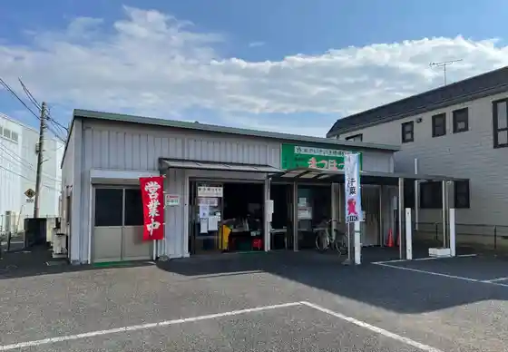

Tojogaoka Rekishi Park (Tojo Tei Tojo Rekishikan)
Matsudo, Chiba · 047-362-2050 · Official / source link
Haseyama Hondo Tera
Matsudo, Chiba · 047-346-2121 · Official / source link
Yagiri no Watashi
Matsudo, Chiba · 047-363-9357 · Official / source link
Matsudo Ritsu Museum
Matsudo, Chiba · 047-384-8181 · Official / source link
Matsudo Nosambutsu Chokubai Tokoro
Matsudo, Chiba · 047-341-3050 · Official / source link

JA Tokatsu Chuo Chokubai Tokoro
Matsudo, Chiba · 047-711-7707 · Official / source link
Noma Jo Dote
Matsudo, Chiba · 047-382-5570 · Official / source link
Matsudo Shrine
Matsudo, Chiba · 047-362-3544 · Official / source link
Kisetsu no Hana (Hanashobu Ajisai) / Hondo Tera
Matsudo, Chiba · Official / source link
Buppo Yama Tozen Tera
Matsudo, Chiba · 047-345-1517 · Official / source link
Ho Yama Manman Tera
Matsudo, Chiba · 047-341-3009 · Official / source link
Kamekichi Noen Bekkan
Matsudo, Chiba · 050-1362-1080 · Official / source link